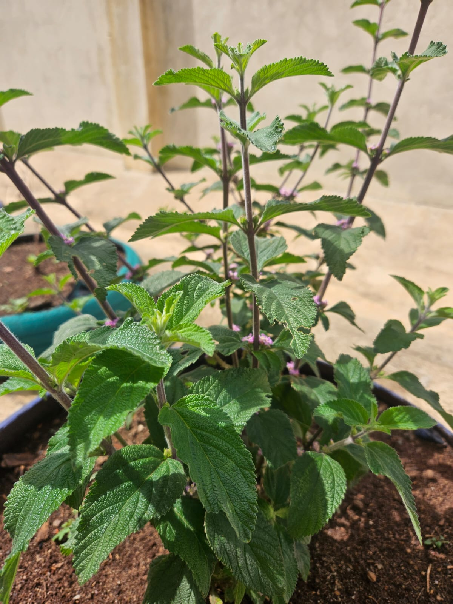

PLANTA 01
Hortelã-pimenta
Mentha × piperita
Folhas aromáticas que mostram como um mesmo chá ganha vários nomes.
Também chamada: Hortelã-pimenta, menta, hortelã-das-cozinhas
Ver DetalhesUma horta de plantas medicinais em canteiros de pneus reaproveitados e uma pesquisa que escuta como a comunidade chama cada planta. A mesma folha, muitos nomes, todos legítimos.
10 plantas ✳ 2 etapas ✳ muitos nomes

Quem fala está certo: variar também é cultura.
Dez plantas medicinais, cada uma com nome científico, princípio ativo e os nomes populares que a comunidade usa para chamá-la.
Mentha × piperita
Folhas aromáticas que mostram como um mesmo chá ganha vários nomes.
Também chamada: Hortelã-pimenta, menta, hortelã-das-cozinhas
Ver Detalhes
Matricaria chamomilla
Flores delicadas que aproximam ciência e conhecimento popular.
Também chamada: Camomila-comum, maçanilha, macela
Ver Detalhes
Melissa officinalis
O exemplo de polissemia da nossa pesquisa: o mesmo nome para plantas diferentes.
Também chamada: Cidreira-verdadeira, melissa, chá-de-frança
Ver Detalhes
Salvia rosmarinus
Uma planta de folhas finas e perfumadas que até já mudou de nome científico.
Também chamada: Alecrim-de-jardim, alecrim-da-horta, erva-da-graça
Ver Detalhes
Cymbopogon citratus
Um capim aromático que divide o nome “cidreira” com outra planta.
Também chamada: Capim-santo, capim-limão, chá-de-estrada
Ver Detalhes
Mentha pulegium
Parente pequeno da hortelã, de aroma intenso e que pede muito cuidado.
Também chamada: Hortelã-zinho, poejo-das-hortas
Ver Detalhes
Hypericum perforatum
Um nome que vem do latim: as folhas parecem ter mil furinhos.
Também chamada: Hipérico, mil-furada, hipérico-verdadeiro
Ver Detalhes
Achillea millefolium
Nomes de remédio de farmácia para uma planta de folhas muito recortadas.
Também chamada: Novalgina-da-horta, pronto-alívio, milefólio
Ver Detalhes
Plectranthus barbatus
Um dos nomes mais confundidos: existe mais de um “boldo”.
Também chamada: Boldo-da-terra, boldo-nacional, boldo-do-chile-falso
Ver Detalhes
Ocimum basilicum
Presente na cozinha e na tradição, com um dos maiores números de nomes.
Também chamada: Alfavaca, basílico, manjericão-doce, remédio-de-vaqueiro
Ver DetalhesConteúdo educativo. Plantas medicinais exigem identificação correta e orientação profissional para uso. Fotos e fontes nas páginas de cada espécie.
O Clube de Ciências uniu botânica e sociolinguística em duas etapas: cuidar da horta e investigar os nomes que a comunidade dá às plantas.
Delimitamos o espaço da escola e visitamos a propriedade da Dona Marli para aprender preparo do solo, compostagem e identificação de espécies. Com o Seu Tião, conseguimos adubo orgânico.
Resultado: dez mudas plantadas.
Entrevistamos familiares e moradores antigos para mapear os nomes populares e os usos tradicionais de cada espécie. Na biblioteca e no laboratório, levantamos os nomes científicos e os princípios ativos.
Resultado: o mapa de nomes da horta.
Pneus inservíveis foram reciclados e pintados, o que ajuda a evitar focos de vetores de doenças. Eles ficam no chão na horizontal e organizados na diagonal, um arranjo que aproveita o espaço e facilita o manejo pelos estudantes.
Baixo custo, aprendizado alto.
Na comunidade, “erva-cidreira” serve tanto para o Cymbopogon citratus, um capim, quanto para a Melissa officinalis, um arbusto rasteiro. É a variação nominal que reflete a identidade cultural e a percepção sensorial de quem nomeia.
Mapeamento etnobotânico, científico e das variações sociolinguísticas das espécies cultivadas.
| Nome popular local | Nome científico | Princípio ativo principal | Variações linguísticas regionais |
|---|---|---|---|
| Hortelã | Mentha × piperita | Mentol | Hortelã-pimenta, menta, hortelã-das-cozinhas |
| Camomila | Matricaria chamomilla | Apigenina | Camomila-comum, maçanilha, macela |
| Erva-cidreira | Melissa officinalis | Ácido rosmarínico | Cidreira-verdadeira, melissa, chá-de-frança |
| Alecrim | Salvia rosmarinus | Ácido carnósico | Alecrim-de-jardim, alecrim-da-horta, erva-da-graça |
| Capim-cidreira | Cymbopogon citratus | Citral | Capim-santo, capim-limão, chá-de-estrada |
| Poejo | Mentha pulegium | Pulegona | Hortelã-zinho, poejo-das-hortas |
| Erva de São João | Hypericum perforatum | Hipericina | Hipérico, mil-furada, hipérico-verdadeiro |
| Mil-folhas | Achillea millefolium | Aquileína | Novalgina-da-horta, pronto-alívio, milefólio |
| Boldo | Plectranthus barbatus | Forcolina | Boldo-da-terra, boldo-nacional, boldo-do-chile-falso |
| Manjericão | Ocimum basilicum | Eugenol | Alfavaca, basílico, manjericão-doce, remédio-de-vaqueiro |
O princípio ativo é a substância associada à planta na literatura consultada pelo grupo. Isso não indica tratamento nem dose.